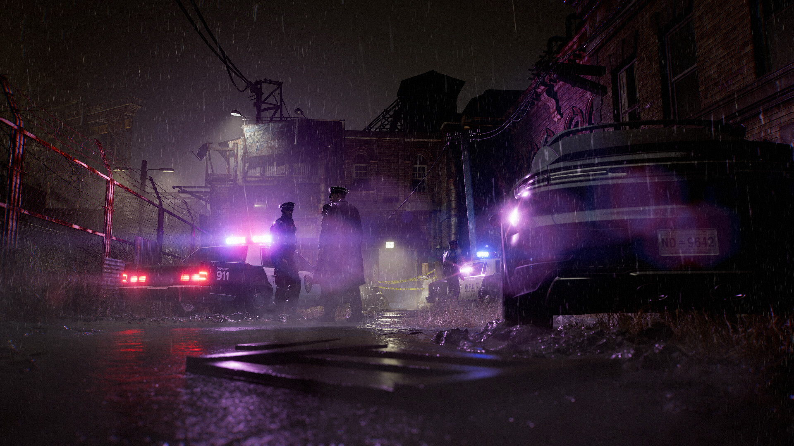
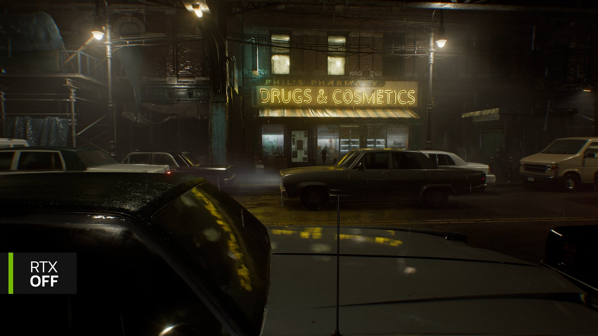
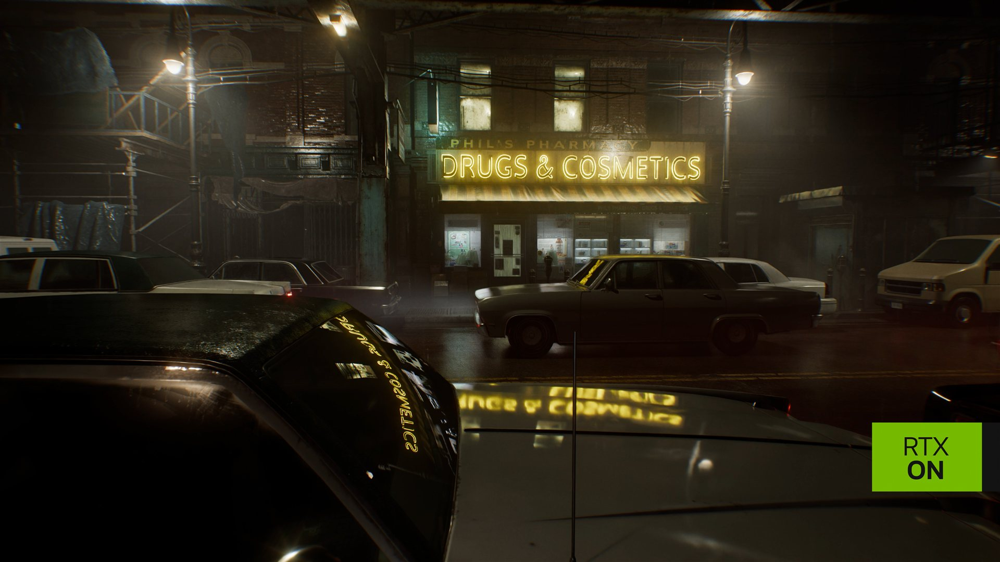

Path tracing en Resident Evil Requiem: cuando toda la luz se calcula con rayos
En PC, Capcom deja de usar trucos para la luz directa y la calcula entera con trazado de rayos. Así funciona, por qué se nota tanto en un reflejo y cuánto cuesta en rendimiento.

Tres formas de iluminar la misma calle
Resident Evil Requiem salió el 26 de febrero de 2026 y en PC ofrece tres maneras de calcular la luz. La primera es la rasterización, la técnica clásica de los videojuegos: el motor dibuja los triángulos de la escena y aproxima sombras, reflejos y luz rebotada con trucos que solo usan lo que ya está en pantalla. La segunda es el ray tracing híbrido que Capcom usa desde los remakes: la luz directa sigue rasterizada y los rayos se reservan para efectos concretos, como los reflejos o la iluminación indirecta.
La tercera es el path tracing, o trazado de trayectorias. Aquí no hay reparto de tareas. Según explicó Capcom en la GDC de 2026, un único proceso de trazado calcula la luz directa y la indirecta. Cada píxel lanza rayos que rebotan por la escena y recogen la luz de lo que tocan, de forma parecida a como se renderiza una película de animación, solo que en tiempo real y con muchísimos menos rayos.
El reflejo que lo explica todo
La comparación que publicó NVIDIA muestra una calle de Raccoon City con lluvia, de noche, frente a una farmacia con un letrero de neón. Es una escena casi diseñada para el path tracing: superficies mojadas, una fuente de luz intensa y coches con carrocerías curvas.


Fíjate en el coche del primer plano. Sin path tracing, el parabrisas y el capó muestran manchas amarillas que sugieren un reflejo, pero no lo dibujan. Es el resultado típico de los reflejos en espacio de pantalla (SSR): el motor copia píxeles de la imagen ya renderizada y los proyecta sobre la superficie, así que se deforman, se cortan en los bordes y se rompen cuando la cámara se mueve. Con path tracing, las letras de «Drugs & Cosmetics» aparecen completas sobre el cristal curvo y vuelven a aparecer, más apagadas, en la pintura del capó. Además, el letrero ilumina la acera y la fachada de forma más uniforme, y las ventanas de la tienda dejan ver mejor su interior.
La rasterización imita la luz con lo que hay en pantalla. El path tracing la sigue rebote a rebote, y por eso el reflejo de un neón por fin se puede leer.
Cómo lo hace el RE Engine
En la GDC de 2026, Hitoshi Mishima, del equipo del RE Engine de Capcom, y Calvin Shu, ingeniero de NVIDIA, explicaron cómo funciona el sistema que comparten Requiem y Pragmata. Según el resumen de Wccftech, a dos ingenieros de Capcom les llevó unos dieciocho meses de trabajo. Estas son las cuatro piezas clave, contadas sin fórmulas:
- Elegir bien qué luces muestrear. Con decenas de luces en escena, el motor no puede lanzar un rayo hacia cada una en cada píxel. Usa un muestreo por importancia (RIS) apoyado en una cuadrícula 3D que guarda qué luces afectan a cada zona, para escoger las que más aportan.
- Simplificar los materiales al elegir. Mientras decide qué muestras probar, el motor usa un modelo de material más sencillo (difuso más un único brillo especular) y deja el cálculo completo para el final.
- Reciclar caminos entre fotogramas. Con ReSTIR GI, los caminos de luz que funcionaron en el fotograma anterior se reutilizan en el siguiente. Así, la imagen tiene menos ruido sin lanzar más rayos.
- Dejar que una IA limpie el ruido. Con tan pocos rayos por píxel, la imagen sale granulada. DLSS Ray Reconstruction se encarga de eliminar ese ruido. Por eso el path tracing de Requiem solo funciona en tarjetas NVIDIA RTX y, al activarlo, el juego enciende DLSS automáticamente.
Ray Reconstruction trajo sus propios problemas. Según la presentación, Capcom tuvo que darle información adicional en materiales como la piel, que dispersa la luz por debajo de la superficie, el cristal esmerilado, las gotas de lluvia, las calcomanías transparentes y los hologramas. Sin esos datos, el denoiser confundía estos efectos con ruido y los borraba o los dejaba con estelas.
De 21 a 13,3 milisegundos
Para que un juego vaya a 60 fps, cada fotograma tiene que estar listo en 16,6 milisegundos. La parte más interesante de la charla es cómo llegaron a ese número, porque el camino no fue recto. Las cifras son de una escena de prueba en 4K, con 73 luces y una RTX 5090:
| Paso | Tiempo por fotograma |
|---|---|
| Versión inicial | 21 ms |
| Materiales simplificados al muestrear | 17,7 ms |
| Primera adaptación de SER (reordenar el trabajo de la GPU) | 23,5 ms |
| SER ajustado | 20,8 ms |
| SER con recursos bindless | 16,9 ms |
| Con optimizaciones del driver | 13,3 ms |
Hubo dos retrocesos. El más llamativo fue que, al unir dos pasos del shader en uno, el compilador duplicó instrucciones hasta llegar a unas 24.000. La GPU pasaba el 35 % del tiempo esperando a que esas instrucciones se cargaran en su caché. Cambiar a recursos bindless, que permiten acceder a texturas y búferes sin declararlos uno por uno, dejó el programa en unas 12.000 instrucciones y desbloqueó el resto de mejoras. En los videojuegos de hoy, rendir bien depende tanto de cómo se organiza el código para la GPU como de la técnica elegida.
Lo que cuesta en tu PC
Las pruebas de DSOGaming con una RTX 5090 en 4K y con todo al máximo muestran el precio de cada modo:
Con DLSS en modo Rendimiento, el path tracing sube a 53 fps de media, con mínimos de 47. Con la generación de fotogramas múltiple x4 llega a 180 fps, aunque parte de esas imágenes las genera una IA entre fotogramas reales y la respuesta a los controles no mejora al mismo ritmo. Ningún modo es perfecto: DSOGaming encontró fallos en los reflejos SSR del modo rasterizado, ruido al mover la cámara con ray tracing y estelas en las gotas de lluvia y el humo con path tracing, efecto del denoiser.
Hay que decirlo claro: con path tracing, ni la tarjeta más cara del mercado llega a 30 fps en 4K sin ayuda de la IA. No es un modo para jugar con cualquier equipo. Sirve para ver hacia dónde va la iluminación en los videojuegos, y en tarjetas de gama media-alta funciona si se acepta jugar con DLSS.
Qué revela sobre Capcom
Lo interesante no es que Requiem tenga path tracing; varios juegos lo tienen desde Cyberpunk 2077. Lo interesante es dónde lo puso Capcom. El RE Engine siempre ha brillado en espacios pequeños, oscuros y llenos de materiales difíciles: piel, sangre, metal mojado y cristal. Son justo las superficies donde los trucos de la rasterización fallan antes. Una saga de terror vive de lo que se ve a medias en la oscuridad, y que un reflejo se pueda leer o que una luz rebote de verdad en un pasillo cambia cómo se siente el miedo.
También deja una pista sobre el futuro. Capcom invirtió año y medio en una técnica que hoy solo puede usar una parte de los jugadores de PC. Es una inversión a largo plazo: lo que aprendieron con Requiem y Pragmata estará en el motor cuando las consolas tengan potencia para usarlo.
Fuentes
- Wccftech — RE Engine Path Tracing Deep Dive (resumen de la charla de Capcom y NVIDIA en la GDC 2026), por Alessio Palumbo
- DSOGaming — Resident Evil Requiem: Path Tracing, Ray Tracing & DLSS 4.5 Benchmarks, por John Papadopoulos
- NVIDIA — Resident Evil Requiem: path tracing y DLSS 4 (fuente de las imágenes comparativas)
- Steam — Resident Evil Requiem